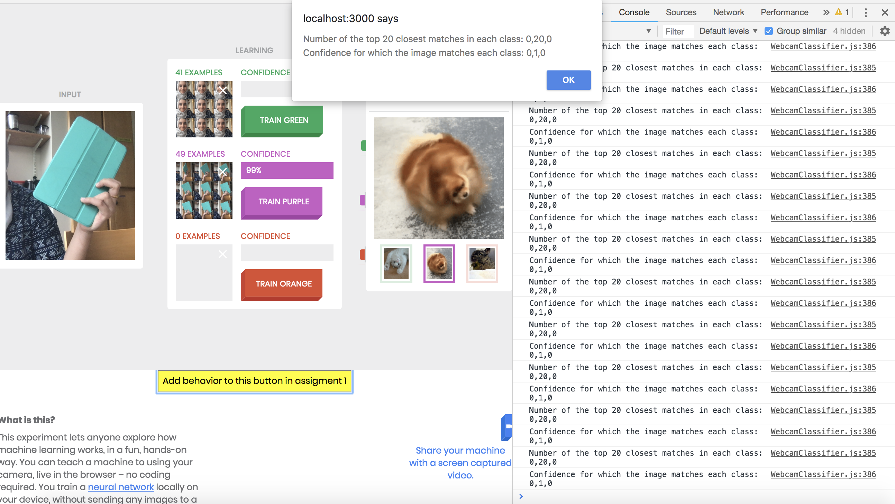
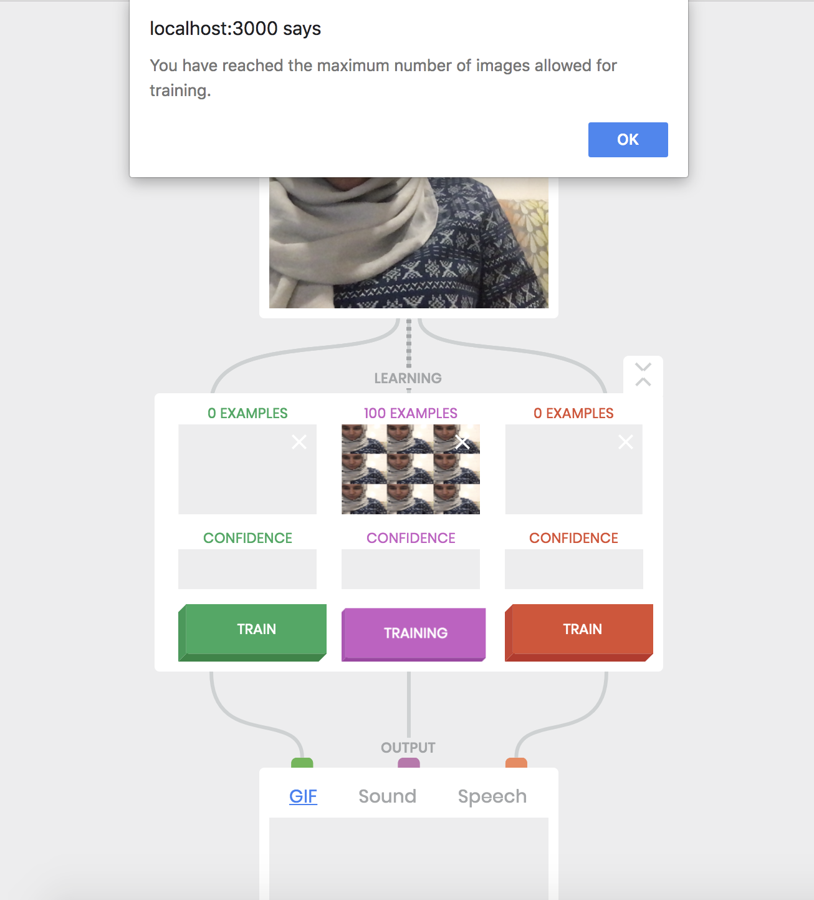

Assignment 1
Due Monday September 10th at 10 AM
Build Teachable Machine on Your Computer

Train Some Classes
For this assignment, we were instructed to run some experiments with a partner and note down our observations.
Task 1: We trained the network with a series of our facial expressions and observed that the network can tell the difference between the two faces with a confidence of greater than 95%.

Task 2: I trained the network on various inanimate objects, including my phone, notebook, and water bottle and observed a confidence of minimum 95%. However as I take the object further away from the camera, it begins to misclassify. For example, the bottle is mistaken to be the phone with a confidence level of approximately 75% due to the similarity of color between the two objects.

Task 3: I trained the network on two different classes with the same image set; specifically my two classes were the same (my face in a fixed facial expression). In this case, I observed the confidence shift between the two classes with each having approx 50%.
Task 4: With the first class defined as two different people having Expression A and the second class defined as two people having Expression B, the classifier was able to distinguish between the two facial expressions at a confidence of 90%. In my case, my first class was a smiling facial expression and my second class was a confused facial expression.


Task 5: With the first class defined as person A very close to the camera and the second class defined as a person B very far, the network was very confused and would sometimes misclassify person A as person B and it could be argued that it was training based on distance. I also trained the network with a 3rd class of person B close to the camera, observing that the network could now identify faces with a confidence of 95%/
Task 6: The Russian Tank Parable is used to illustrate when a network learns based on a different feature in the image rather than the one you assume - in this scenario, the images were trained on the classes cloudy/sunny rather than trees/camouflaged tanks.
Some examples to illustrate this include:
Example 1: The above question demonstrates the Russian Tank Parable as the network trained based on close verus far rather than on the face of the person.
Example 2: First class defined as a pencil, Second Class defined as a pen. The intended classification is the object but the real classification could be the background of the object (kitchen versus classroom)
How Teachable Machine Works
Teachable Machine is based on representing images as points in a high-dimensional vector space. The vector space coordinates are generated by a multilayer convolutional neural network called squeezenet. The version of squeezenet included in Teachable Machine has been trained on millions of images. Given a new image, it produces 1000 values that reflect various attributes of the images, presented as a 1000-dimensional "logits" vector.
I did a little more research on squeezenet and found these links helpful: https://www.kdnuggets.com/2016/09/deep-learning-reading-group-squeezenet.html
Examining the Confidence Levels

Task 1: I stored the variables confidences and nCounts in the global variables
globConf and globNCounts respectively and used the window.alert function to display a dialog with the number of closest matches and the confidence level.
Task 2: After redoing the experiments from section 2, I observed the following (with support from confidences and top K values):
Experiment 1: Inanimate Objects - I trained the network on the same inanimate object as classes (bottle, notebook, and iPad) with the same background, and observed that all the top K images were from the a single class with a confidence of almost 100% for test images that were the same as the trained images.
Experiment 2: Inanimate Objects with Distance - The same was observed for the bottle object placed very far away from the screen. However for images of notebook and iPad, the network was very confused as these objects are of the same shape but different color.
Experiment 3: Different Background, Same Object - With the same 3 classes as before, I trained the network with an object on one background and tested it on another background. I saw that the network had trained on the background and was unable to classify the object to its correct class.
Scaling the Confidence Values
Task 1: The method computeConfidences() originally computes confidence values for each class by adding up the number of topK images in each class (nCounts) and dividing by K (kVal = 20 maximum).
I explored two alternative ways of computing the confidence.
A. Scaling the Confidences (Weighted Approach):
I calculate the weighted confidence for each class as follows:
confidence for class X = (number of topK images for class X) / ((number of total images in class X) * (kVal))
B. Threshold for Confidence
For this approach, the confidence for a class is greater than zero only if the number of topK images is greater than 1. For all classes that satisfy this condition, the total confidence is divided equally.
confidence for class X = (number of topK images for class X)/kVal
Task 2: With these modified confidence calculations, I tried some of the scenarios that confused the network previously, including detecting an object in different backgrounds as well as detecting different objects at different distances away from the camera.
Method A: The network performs better for this method in situations where there is a difference between the number of samples that were used for training between the two samples, since we are now scaling the confidences.
For example, for 3 classes (Notebook, Bottle, iPhone) each with 122, 30, and 60 images, the confidence values are as follows:
Modified Results: [0.4737, 0.2632, 0.2632]
Unmodified Results: [0.4737, 0.2632, 0.2632]
Method B: The network performs better for this method in situations where there is a lot of overlap between the images for two different objects due to background. It also performs better for objects that look very similar in shape (such as the notebook verus iPad scenario).
For example, for 3 classes (Notebook, Bottle, iPhone) each with 122, 30, and 60 images, the confidence values are as follows:
Modified Results: [0.0455, 0.0455, 0.9091]
Unmodified Results: [0.25, 0.25, 0.5]
Task 3: Some image classification situations where the above alternative ways of confidences may be useful include cases where it is important to weigh classes that have a better match as there may be noise in the data due to the background or a small number of images used to train for a specific class.
Modified code for the WebcamClassifier can be found here
Limiting the number of training examples per class
Task 1: I changed the animate() method such that each class has an allocated number of samples it can accept. An alert window pops up notifying the user that no more samples can be accepted as shown in the image below.

2. Once you’ve finished the implementation, explore what happens if the number of training images for the classes is severely unbalanced. Try using both easy-to-classify cases and some of the cases that confused your system previously.
Further Explorations
Readings I Found Useful